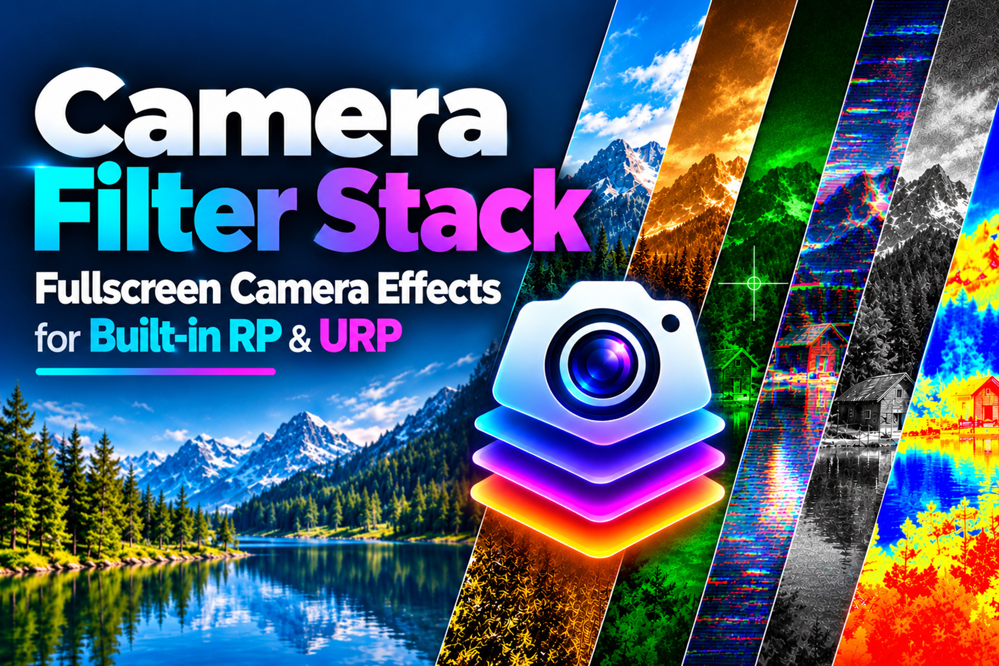

Tools / Camera Filter Stack
Your game's look, decided in the Editor. Stack camera filters and post-processing looks onto any Unity camera — no shader code required.
Instant download from the Unity Asset Store
One-time purchase · Unity Asset Store
Buy on the Unity Asset StoreEmail support if anything doesn't work · Refunds handled by the Unity Asset Store

Two games can share the same assets and look nothing alike — the difference is usually the grade. Color, contrast, vignette, a touch of glow: a short list of full-screen looks is what turns flat renders into a visual identity. Camera filters are the cheapest way to get that identity, because they apply to the whole frame at once instead of requiring every material and light to be perfect.
Indie developers and small teams who want their Unity game to look deliberate without hiring a graphics programmer or adopting a heavy post-processing pipeline — anyone shipping a 3D or 2D game where the mood matters.
The idea is simple: the camera renders the scene, then each filter in the stack processes the frame in order. A color grade shifts the palette, a vignette darkens the edges, a subtle glow softens the brights. Because the filters run in sequence, the order matters — and because each has a strength control, the look is tunable rather than all-or-nothing. You build the look the way you build a playlist: add layers until it sounds right, then stop.
Writing custom shaders for a grade is real graphics work: render targets, blits, shader variants, platform quirks. A filter stack hides all of that behind a list you can edit in the Inspector. Pick the filters, set their strength, and the stack does the rest. That is the whole value proposition — the look without the shader work, and without the debugging that comes with it.
The expensive way to grade a game is the build-and-check loop: change a value, build, run, look, repeat. Camera Filter Stack previews live in the Editor, so the grade is visible while you work on the scene. That turns color grading from a pre-release chore into something you do alongside level design, when it is cheap to change your mind.
A game with five scenes and five different grades looks unfinished. A filter stack is a reusable setup: define the look once, apply the same stack to the cameras in every scene, and the whole game shares one visual identity. When the look needs to change, you change it in one place instead of hunting through five scenes.
Honest framing: every full-screen effect has a cost, and the cost adds up with each filter in the stack. On PC and console that cost is usually small; on mobile and low-end targets it is the thing to watch. The practical rule is to keep the stack short — two or three filters that earn their place — and profile the frame cost of each one. A grade that costs two milliseconds is a bargain; a grade that costs ten is a problem, and the fix is fewer filters, not a faster phone.
A full post-processing stack is a large system: dozens of effects, volume blending, its own workflow to learn. It is the right call for projects that need that depth. Camera Filter Stack is the focused alternative for projects that don't — a short, ordered list of looks on the camera, set up in minutes. If your game needs a grade and not a pipeline, the smaller tool is the better fit.
A practical pass looks like this. Start with the ungraded scene and ask what mood it needs: warm, cold, moody, vibrant. Add one filter at a time, starting with the color grade — it does most of the work. Then a vignette to focus the eye, and a subtle glow only if the scene has bright elements worth softening. Check the look in the Editor at game-viewing distance, then walk the scene in Play mode and watch for the two common mistakes: a grade so strong it hides detail, and a grade so subtle it does nothing. Stop when the scene reads correctly at a glance.
Filters grade the frame; they cannot fix the scene. If the lighting is flat, the materials are wrong, or the composition is weak, no filter saves it — fix the scene first, then grade. Filters are also the wrong place for gameplay-critical readability: if a filter makes enemies hard to see or text hard to read, the look is costing you players. Grade for mood, keep readability.
A quick way to evaluate a filter stack in an afternoon: add it to your main camera, build a three-filter look, and check it in the Editor at game-viewing distance. Then profile the frame cost of each filter on your lowest target device, apply the same stack to a second scene, and toggle filters at runtime to confirm the workflow fits your game. If the look lands and the cost is small, the tool fits; if the stack needs ten filters to look right, the scene needs work first.
Most Unity games that look good share one cheap secret: the frame is graded. Camera Filter Stack puts that grade on the camera as a short, ordered list of looks — color, vignette, glow — tunable in the Editor and reusable across every scene. No shader code, no new pipeline, no build-and-check loop just to see a color change.
A camera filter stack layers visual filters onto a Unity camera — color grading, vignette, bloom-style glow and similar looks — so the whole scene takes on a consistent mood without touching individual materials.
No. That is the point of a filter stack: the looks are ready to apply and tune in the Editor. You pick filters, adjust their strength, and see the result — no shader code.
Yes — stacking is the core idea. Filters apply in order, so you can combine a color grade with a vignette and a subtle glow, then tune each layer until the look is right.
Every full-screen effect costs something, so the rule is the same as with any post-processing: keep the stack short on mobile and low-end targets, and profile the frame cost of each filter before shipping. A few well-chosen filters are cheap; a long stack on a weak GPU is not.
Yes — a filter stack is a reusable setup. Define the look once and apply the same stack to the cameras in your other scenes, so the whole game shares one visual identity.
Add the filter stack to your camera, choose the filters you want, and tune them in the Inspector. The preview updates in the Editor, so you grade the look while you build the scene — no play-test loop just to see a color change.
They overlap. Post-processing is the broad term for everything applied to the rendered frame; a camera filter stack is the practical way to organize it — a short, ordered list of looks on the camera instead of a scattered set of effects.
Yes — filters preview live in the Editor. That is the whole workflow advantage: you see the graded image while you work, instead of building the game to check a color tweak.
It depends on the stack you build. A short stack of cheap filters works on mobile; a long stack of heavy effects does not. Keep the filter count low on mobile targets and measure the frame cost per filter.
Filters are components on the camera, so they can be enabled and disabled like anything else — useful for damage flashes, night vision, slow-motion looks, or any effect that should appear and disappear during play.
Camera filters apply to what the camera renders. For 2D games that means the whole 2D scene gets the look; UI drawn on top of the camera output is affected the same way, so plan your look with the interface in mind.
A full post-processing stack is a large system with dozens of effects and its own volume workflow. Camera Filter Stack is the focused alternative: a short list of looks on the camera, fast to set up, for games that want a grade without adopting a whole pipeline.